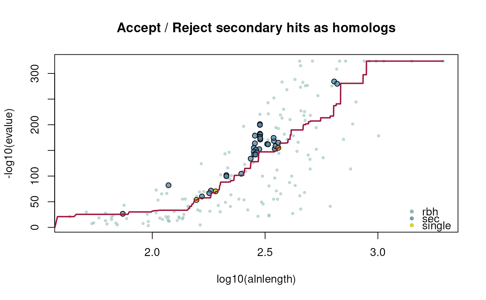

This function assigns tandem duplicates given (conditional-)reciprocal best hit (CRBHit) pairs and their chromosomal gene position. The function is ported into R from Haug-Baltzell et al. (2017) https://github.com/LyonsLab/coge/blob/master/bin/dagchainer/tandems.py
Arguments
- rbhpairs
(conditional-)reciprocal best hit (CRBHit) pair result (see
cds2rbh) [mandatory]- genepos
Gene position matrix as obtained from
cds2genepos[mandatory]- dupdist
Maximum distance between 2 gene positions on the same chromosome which will call them as a pair of local duplicates. If they are farther apart than
dupdist, but share a common hit withindupdistof both, then they will still be in the same set of local duplicates. [default: 5]
Value
matrix
1: $gene.seq.id
2: $gene.chr
3: $gene.start
4: $gene.end
5: $gene.mid
6: $gene.strand
7: $gene.idx
8: $tandem_group
References
Haug-Beltzell A et al. (2017) SynMap2 and SynMap3D: web-based whole-genome synteny browsers. Bioinformatics 33(14), 2197-2198.
Examples
## load example sequence data
data("ath", package="CRBHits")
## get selfhits CRBHit pairs
ath_selfhits_crbh <- cds2rbh(
cds1=ath,
cds2=ath,
plotCurve=TRUE)

## get gene position
ath.genepos <- cds2genepos(
cds=ath,
source="ENSEMBL")
## get tandem duplicate results
ath_selfblast_crbh.tandemdups <- tandemdups(
rbhpairs=ath_selfhits_crbh,
genepos=ath.genepos)
head(ath_selfblast_crbh.tandemdups)
#> # A tibble: 6 × 8
#> gene.seq.id gene.chr gene.start gene.end gene.mid gene.strand gene.idx
#> <chr> <chr> <dbl> <dbl> <dbl> <chr> <int>
#> 1 AT1G01130.1 1 61905 63811 62858 -1 13
#> 2 AT1G01140.1 1 64166 67774 65970 -1 14
#> 3 AT1G01390.2 1 148013 149848 148930. -1 41
#> 4 AT1G01420.2 1 154367 156178 155272. -1 44
#> 5 AT1G01580.2 1 208995 213082 211038. 1 61
#> 6 AT1G01590.1 1 214150 217734 215942 1 62
#> # ℹ 1 more variable: tandem_group <chr>